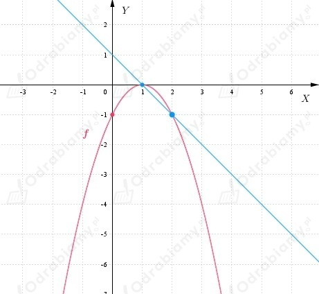

Z treści zadania wiemy, że
Na rysunku obok treści zadania został naszkicowany
wykres funkcji f oraz wykresy trzech prostych, które są
siecznymi wykresu funkcji f (przecinają wykres funkcji f w dwóch punktach).
a)
Z treści zadania i rysunku wiemy, że sieczna przechodzi przez
punkt (0, 0) oraz punkt (1, 1).
Wobec tego współczynnik kierunkowy tej prostej ma wartość:
b)
Z treści zadania i rysunku wiemy, że sieczna przechodzi przez
punkt (0, 0) oraz punkt (2, 4).
Wobec tego współczynnik kierunkowy tej prostej ma wartość:
c)
Z treści zadania i rysunku wiemy, że sieczna przechodzi przez
punkt (0, 0) oraz punkt (3, 9).
Wobec tego współczynnik kierunkowy tej prostej ma wartość:
Z treści zadania wiemy, że
Odcięte punktów przez które przechodzi sieczna wykresu funkcji f:
Wyznaczamy punkty, przez które przechodzi sieczna wykresu funkcji f:
Zatem prosta będąca sieczna wykresu funkcji f przechodzi przez punkty: (1, 0) i (2, -1).
Szkicujemy wykres funkcji f oraz sieczną:

Wyznaczamy współczynnik kierunkowy siecznej:
| Jeśli istnieje skończona granica
to granicę tę nazywamy pochodną funkcji f w punkcie x0 i oznaczamy f'(x0):
|
a)
Obliczamy pochodną funkcji f w punkcie x0.
b)
Obliczamy pochodną funkcji f w punkcie x0.
c)
Obliczamy pochodną funkcji f w punkcie x0.
d)
Obliczamy pochodną funkcji f w punkcie x0.